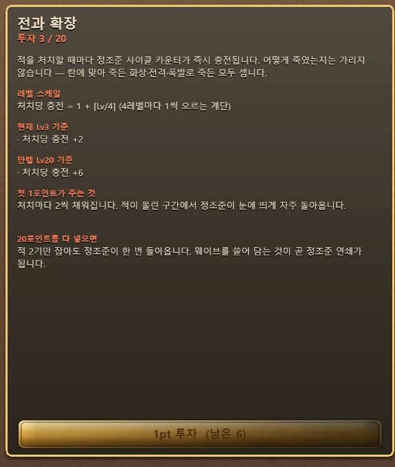

카르곤 · 아레나 서바이벌 — 상단에 이번 웨이브의 처치 할당, 우상단에 레이더, 하단에 액티브
스킬 슬롯이 있다
카르곤 · 아레나 서바이벌 — 상단에 이번 웨이브의 처치 할당, 우상단에 레이더, 하단에 액티브
스킬 슬롯이 있다NAN 2026 Game×AI 해커톤 사전 과제 · 개인 참가 김민석 (v0o0v2@gmail.com) · 2026-08-10
Planet Blitz (플래닛 블리츠)
"행성을 침략해 장비를 모으고, 그 힘으로 상위 랭커의 기지를 뚫어 자리를 빼앗는 탄막 슈팅."
탑다운 탄막 슈팅에 핵앤슬래시식 장비 파밍과 비동기 PvP 래더를 붙인 웹 게임입니다. 공격은 자동으로 나가기 때문에 플레이어가 신경 쓸 것은 회피와 자리 잡기뿐입니다. 대신 무엇을 입고 무엇을 찍어서 출격하느냐에 따라 같은 행성도 전혀 다른 난이도가 됩니다.
개발 정보 — 1인 개발, 26일, 사람이 직접 타이핑한 게임 코드는 없습니다. 커밋 1,392건, PR 498건, 자동 테스트 8,676건이 전량 통과합니다. 브라우저에서 바로 플레이할 수 있는 상태로 배포돼 있으며, 작업 방식은 「AI 활용 기술 문서」에 따로 정리했습니다.
| 항목 | 링크 |
|---|---|
| 플레이 · 심사용 데모 (로그인 불필요) | (데모 빌드 링크 — 배포 후 기재) |
| 플레이 · 정식 (계정 연동) | https://v0o0v.github.io/planet-blitz/ |
| 플레이 영상 (YouTube, 30~60초) | (영상 링크 — 업로드 후 기재) |
| 소스 코드 (public) | https://github.com/v0o0v/planet-blitz |
데모 빌드 접속에 문제가 있으시면 심사용 임시 계정을 제공해 드립니다 — v0o0v2@gmail.com 으로 연락 주십시오.
정식 빌드에서 구글 로그인을 받는 이유는, 래더 자리를 두고 다투는 비동기 PvP가 계정 없이는 성립하지 않기 때문입니다. 다만 심사 과정에서 로그인이 번거로울 수 있어, 같은 소스에서 서버 설정만 빼고 빌드한 무로그인 데모를 따로 올려 두었습니다. 네트워크 계층이 설정이 없으면 알아서 아무 일도 하지 않도록 처음부터 만들어 둔 덕분에, 코드를 갈라 놓지 않고도 두 빌드가 나옵니다.
WASD 이동과 Space 대시, 두 가지만 기억하시면 됩니다
카르곤 · 아레나 서바이벌 — 상단에 이번 웨이브의 처치 할당, 우상단에 레이더, 하단에 액티브
스킬 슬롯이 있다
 카르곤 보스전 — 보스가 큰 패턴을 쓰고 나면 5초 동안 과열 상태가 되어 받는 피해가 2배가
된다. 이 구간을 노리는 것이 보스전의 핵심이다
카르곤 보스전 — 보스가 큰 패턴을 쓰고 나면 5초 동안 과열 상태가 되어 받는 피해가 2배가
된다. 이 구간을 노리는 것이 보스전의 핵심이다
 톡사르 · 오염 확산 — 적을 처치하는 것이 아니라 번지는 오염 구역을 정화하는 것이 목표다
톡사르 · 오염 확산 — 적을 처치하는 것이 아니라 번지는 오염 구역을 정화하는 것이 목표다
 아르케 · 레이싱 — 화면이 계속 왼쪽으로 흐르기 때문에 뒤로 물러설 수 없다. 바닥의 부스트
패드를 밟아 가며 앞으로 뚫는다
아르케 · 레이싱 — 화면이 계속 왼쪽으로 흐르기 때문에 뒤로 물러설 수 없다. 바닥의 부스트
패드를 밟아 가며 앞으로 뚫는다
 기지 — 건물 7종과 출격 게이트. 아직 열리지 않은 건물은 잠긴 상태로 보여서, 다음에 무엇이
열리는지 자연스럽게 알 수 있다
기지 — 건물 7종과 출격 게이트. 아직 열리지 않은 건물은 잠긴 상태로 보여서, 다음에 무엇이
열리는지 자연스럽게 알 수 있다
 런 정산 — 이번 판의 전투 기록과 주운 전리품을 보여주고, 바로 다시 출격할 수 있다
런 정산 — 이번 판의 전투 기록과 주운 전리품을 보여주고, 바로 다시 출격할 수 있다
| 조작 | 키 |
|---|---|
| 이동 | WASD 또는 방향키 |
| 공격 | 자동 — 주무기가 가장 가까운 적을 자동 조준·연사 |
| 대시 | Space (쿨다운 · 대시 중 무적) |
| 파워업 선택 | 레벨업 시 3택 오버레이에서 마우스 클릭 |
판정 규칙 한 가지만 기억하세요: 적탄은 크고 눈에 잘 띄게 날아오지만 수가 많습니다. 실제 피격 판정은 기체 중심의 아주 작은 점뿐이라, 겹쳐 보이는 탄 사이로 빠져나갈 수 있습니다.
출격하면 사방에서 적이 몰려옵니다. 주무기는 알아서 가장 가까운 적을 쏘기 때문에, 플레이어가 할 일은 탄막 사이를 비집고 다니며 경험치 젬을 끊기지 않게 줍는 것입니다. 연속으로 주울수록 배율이 올라가서, 안전한 곳에 숨어 있는 것보다 위험한 곳으로 파고드는 편이 이득이 되게 했습니다.
레벨이 오를 때마다 파워업 3장 중 하나를 고르고, 그 선택이 쌓이면서 이번 판의 빌드가 완성됩니다. 중간에 보급선이 지나가면 20초 안에 격추해 확정 장비를 챙길 수 있습니다.
웨이브는 시간이 아니라 처치 할당으로 넘어갑니다. 정해진 수만큼 잡지 못하면 적이 추가로 쏟아져 압박이 커지기 때문에, 강한 빌드는 판을 빨리 끝내고 약한 빌드는 오래 버텨야 합니다. 빌드의 차이가 난이도 숫자가 아니라 판의 길이로 나타나는 셈입니다.
웨이브를 모두 넘기면 3페이즈 보스가 나옵니다. 보스가 큰 패턴을 쓰고 나면 5초 동안 과열 상태가 되어 받는 피해가 두 배가 되는데, 이 순간에 화력을 몰아넣는 것이 보스전의 핵심입니다. 과열 창을 몇 번 놓치느냐가 그대로 승패로 이어집니다.
행성마다 난이도만 다른 것이 아니라 런의 규칙 자체가 다릅니다. 어느 행성으로 갈지 고르는 것이 사실상 오늘 어떤 게임을 할지 고르는 셈입니다.
런 바깥에서 캐릭터를 키우는 축은 세 가지입니다. 셋이 각각 오래 가는 선택, 운을 다루는 선택, 한 판만 걸고 하는 선택을 맡도록 성격을 갈라 놓았습니다.
기체는 7종이고, 기체마다 스킬 트리가 3계열씩 있습니다. 계열의 역할은 공격·방어·유틸리티로 공통이지만 이름과 내용물은 기체마다 다릅니다. 예를 들어 스트라이커는 화력·생존·기동이고, 팬텀은 암살·위상·교란입니다. 한 계열에 10종씩, 기체당 30종, 7기체를 합쳐 210종입니다.
Z·X)뿐이라
여섯 종 중 둘을 고르게 됩니다. 예를 들어 스트라이커의 상위 액티브 전탄 일제사는 사방으로
광선을 한꺼번에 뿌리고, 브루저의 하위 액티브 충각 돌진은 앞으로 밀고 나가면서 장갑을
쌓습니다. 팬텀의 상위 액티브 무한 초격은 일정 시간 동안 은신 해제 배율이 소모되지 않고
계속 실립니다.
연구소 스킬 상세 — 스킬마다 레벨에 따른 계산식과 현재 수치, 만렙 기준 수치를 함께 보여준다. 어떤 스킬에 점수를 더 넣을지 감이 아니라 숫자로 비교할 수 있게 한 화면이다스킬 예시 — 스트라이커 (화력·생존·기동)
| 스킬 | 계열 | 효과 |
|---|---|---|
| 전과 확장 | 화력 | 적을 처치할 때마다 정조준 사이클이 충전된다. 4레벨마다 충전량이 한 칸씩 늘어난다 |
| 파편 격발 | 화력 | 관통을 다 쓰고 사라지는 탄이 그 자리에서 터진다. 폭발 피해는 그 탄 피해의 30%에서 시작해 레벨당 2%p씩 오른다 |
| 연장 탄창 | 화력 | 정조준이 터지는 순간 같은 방향으로 한 번 더 쏜다. 추가 사격의 위력은 처음 40%에서 만렙 70%까지 오른다 |
| 최후 처형 | 생존 | 내 체력이 30% 아래일 때, 정조준탄이 빈사 상태의 적을 즉사시킨다 |
| 선체 증축 | 생존 | 이번 판에서 경험치를 일정량 쌓을 때마다 최대 체력이 영구히 늘어난다 |
| 이중 추진 | 기동 | 대시가 2회 충전식이 된다. 두 번째 충전은 별도로 느리게 차오른다 |
빌드가 성립하는 이유 — 스킬끼리 조건을 주고받는다
스트라이커의 30종은 서로 무관한 강화가 아니라 정조준 사이클이라는 하나의 축을 공유합니다. 정조준을 채우는 쪽(전과 확장은 처치할 때마다, 응전 조준은 얻어맞을 때마다)이 있고, 정조준이 터질 때 얹히는 쪽(연장 탄창의 추가 사격, 소이 정조준의 화상, 표적 고정, 최후 처형의 즉사 판정)이 있습니다. 그래서 화력 계열에 점수를 몰면 단순히 숫자가 커지는 것이 아니라 발사 리듬 자체가 달라집니다.
몰아 찍기가 항상 옳지는 않습니다. 위의 여왕 사출은 마릿수를 늘려 주는 확장 둥지와 정면으로 상쇄되므로 둘 중 하나만 골라야 합니다. 관통 위주로 짠 빌드에 표적 고정을 넣으면 관통이 표적을 계속 갈아치워 효과가 죽고, 소이 정조준의 화상은 보스의 과열 창과 슬롯이 겹쳐 보스에게는 걸리지 않습니다. 이런 궁합 정보를 스킬 상세 화면에 그대로 적어 두었습니다 — 알아서 검증하게 만드는 대신 게임이 먼저 알려 주는 쪽을 택했습니다.
장비는 슬롯 7종에 8칸입니다(주무기·보조무기·장갑·실드·엔진·코어, 그리고 모듈은 두 칸). 등급은 노말·매직·레어·유니크 4단계이고, 등급이 높을수록 붙는 옵션(어픽스) 개수가 늘어납니다. 노말은 1개, 매직은 2~3개, 레어와 유니크는 3~6개입니다.
정련 — 한 번 더 굴릴 것인가
굴릴 때마다 마음에 드는 옵션 하나를 고정할 수 있습니다. 대신 고정은 되돌릴 수 없고, 고정한 개수가 늘수록 장비가 녹아 없어질 확률이 가파르게 올라갑니다. 여기에 노 출력을 약불·중불·강불 중에 고르는데, 이 셋은 비용·용해 위험·나오는 수치의 품질이 한 몸으로 움직입니다. 강불은 좋은 수치가 나오지만 비용이 두 배고 녹을 확률도 훨씬 높습니다.
옵션 6개짜리 레어를 4개까지 고정해 놓고 강불로 마지막 한 번을 더 굴릴지 말지 — 이 판단이 정제소의 재미 전부입니다. 참고로 아무것도 고정하지 않았을 때의 용해 확률은 정확히 0이라, 안전하게만 쓸 수도 있습니다.
 격납고 — 슬롯 7종 8칸. 요구 레벨이 모자란 장비는 빨간 표기와 함께 잠긴다
격납고 — 슬롯 7종 8칸. 요구 레벨이 모자란 장비는 빨간 표기와 함께 잠긴다
촉매는 출격 직전에 주입하는 소모품으로, 한 런에 최대 3장을 넣습니다. 같은 카드를 겹쳐 넣을 수는 없고, 특산 촉매는 최대 2장까지입니다.
촉매 예시
아래는 게임 안에 그대로 적혀 있는 규칙 문장입니다. 한 문장 안에 이득과 대가가 같이 들어 있는 것을 보실 수 있습니다.
| 촉매 | 규칙 |
|---|---|
| 풍요 | 전리품이 두 배로 떨어지지만, 바닥에 다섯 개 이상 쌓여 있는 동안에는 적들이 그 더미 크기만큼 빨라진다 |
| 정련 | 주운 전리품이 바로 회수되지 않고 정련로에 쌓여 같은 등급 셋째부터 한 단계 위로 승급하지만, 정련로에 남은 것은 지면 전부 잃는다 |
| 통찰 | 적탄이 발사되기 전 예고 링으로 미리 보이지만, 그 예고 링 안에 서 있는 동안만 경험치가 세 배로 들어온다 |
| 초월 | 최대 체력이 절반이 되지만, 대시 무적 시간이 두 배가 되고 그동안 통과한 적은 2초간 움직이지 못한다 |
특산 촉매는 그 행성의 규칙과 엮여 있습니다. 카르곤 전용 마그마 광맥은 내가 쏜 탄이 지나간 자리에 용암이 솟아 적도 나도 태우지만, 용암 위에서 죽은 적은 전리품을 두 배로 뱉습니다. 아르케 전용 오벨리스크는 보스 앞에 관문 셋을 세워, 통과한 만큼 보스가 약해지고 통과하지 못한 관문의 힘은 그대로 보스에게 넘어갑니다.
가장 귀한 촉매가 위의 초월입니다. 다른 촉매의 10분의 1 빈도로만 나오는데, 하는 일은 체력을 절반으로 깎는 대신 대시를 공격 수단으로 바꿔 놓는 것입니다. 강력하지만 회피에 자신이 없으면 쓸 수 없습니다.
공명 — 3장을 아무렇게나 고르지 않게 만드는 장치
촉매마다 성향 태그가 1~2개 붙어 있습니다(점화·밀도·정밀·수확·도박·침식). 넣은 3장에서 같은 태그가 2장 모이면 약한 공명, 3장이 모두 모이면 강한 공명이 발동합니다. 태그 6종에 2단계씩, 총 12종입니다.
강한 공명은 보상 상한을 크게 열어 주지만 그만큼 대가도 큽니다. 예컨대 도박 태그 3장이 모이면 첫 전리품이 봉인된 채로 떨어져서, 보스를 잡으면 최고 등급으로 열리고 도중에 죽으면 그대로 사라집니다. 침식 태그의 강한 공명은 획득량을 두 배로 만들지만 두 행성에서는 아예 발동하지 않습니다.
즉 촉매 고르기는 "좋은 것 세 장 고르기"가 아니라 "어느 태그로 모을지, 아니면 안전하게 흩을지" 를 정하는 일입니다. 궁합이 나쁜 조합은 출격 전 화면에서 회색·노란색 경고로 미리 알려 주되, 런 안에서 효과를 꺼 버리지는 않습니다. 줄어든 형태로라도 반드시 작동하게 해서 "넣었는데 아무 일도 안 일어남"을 없앴습니다.
촉매 잔재 — 안 쓰는 촉매를 처리하는 법
쓸 일 없는 촉매는 분해해서 잔재로 바꿉니다. 잔재는 크레딧·광물과 완전히 분리된 화폐로, 촉매를 분해해야만 생기고 촉매를 사는 데만 쓰입니다. 환급률은 구매가의 절반이라 무한 증식이 안 되고, 상점에는 공용 30종만 진열되므로 특산은 분해만 되고 되살 수는 없습니다. 덕분에 촉매 경제가 다른 재화 흐름을 건드리지 않고 안에서 닫힙니다.
| 재화 | 쓰는 곳 |
|---|---|
| 스킬 포인트 | 스킬 투자 (레벨업으로만 획득) |
| 크레딧 | 스킬 초기화, 각종 구매 |
| 광물 | 장비 정련(리롤) |
| 촉매 잔재 | 촉매 구매 (촉매 분해로만 획득) |
| 설계도 | 기지 방어 유닛 제작 |
시작하면 기체 한 대와 기본 장비만 있습니다. 기지에서 처음 열려 있는 곳은 격납고(장비)와 연구소(스킬), 기록 보관소, 지시 수신소뿐이고 나머지는 잠겨 있습니다.
행성을 한 번 클리어하는 순간 세 곳이 한꺼번에 열립니다 — 장비를 다시 굴리는 정제소, 방어 배치를 짜는 방어 사령부, 그리고 래더와 침공을 여는 관제탑입니다. 첫 클리어에 성장 축과 PvP를 동시에 붙여서, "한 판만 이겨 보면 게임이 확 넓어지는" 지점을 만들었습니다.
침략 단계는 처음부터 1~10단계가 열려 있고, 그 뒤로는 가장 높이 깬 단계보다 5단계 앞까지 계속 열립니다. 레벨이 단계를 잠그지는 않습니다 — 단계는 순수하게 난이도 표시이고, 실력과 빌드가 되면 얼마든지 앞서 갈 수 있습니다. 다만 자기 레벨보다 세 단계 넘게 낮은 곳에서 파밍하면 보상이 단계당 10%씩 깎여서(최저 30%), 편한 곳에 눌러앉는 것이 손해가 되게 했습니다.
기지 건물 7종 — 각각 무엇을 하는 곳인가
| 건물 | 하는 일 | 열리는 시점 |
|---|---|---|
| 격납고 | 장비 장착과 창고 관리. 등급별 일괄 분해, 획득순·희귀도·슬롯 정렬, 창고 확장, 기체 교체와 예비역(수호기)·계보 확인 | 처음부터 |
| 연구소 | 스킬 트리에 포인트 투자, 크레딧을 내고 전체 초기화, 액티브 스킬 2칸 장착·해제 | 처음부터 |
| 기록 보관소 | 파일럿 파일과 기록 파편 열람, 프롤로그 다시 보기 | 처음부터 |
| 지시 수신소 | 보유 의뢰서 목록과 상세(구간·확정 보상·제약) 확인 후 출격하거나 폐기 | 처음부터 |
| 정제소 | 장비 어픽스 정련. 굴리기, 어픽스 고착, 열 3단계(약한 열·중간 열·강한 열) 선택, 공정 중단 | 행성 1클리어 |
| 방어 사령부 | 침공 방어 배치. L1 대기권·L2 회랑·L3 코어방 세 탭에 유닛을 놓고, 보관함에서 설계도로 제작·레벨업·승격·어픽스 리롤. 저장 전에 시험 침공으로 직접 뚫어 볼 수 있다 | 행성 1클리어 |
| 관제탑 | 래더 순위 확인, 침공 대상 목록과 기지 정찰(상대의 L1~L3 구성 미리보기), 침공·배치전·복수 진입, 격퇴한 상대에게 도발 스티커 | 행성 1클리어 |
방어 사령부의 시험 침공은 자기가 짠 방어를 직접 공격해 보는 기능입니다. 남이 뚫는 걸 기다렸다가 결과로만 배우는 대신, 배치를 바꿀 때마다 바로 확인할 수 있게 했습니다.
레벨이 오르면서 런 한 판이 짧아지면, 그때부터는 런 바깥의 루프가 하루를 채웁니다.
의뢰서 — 규칙이 바뀐 채로 두 구간을 돌파한다
행성 보스를 잡고 이긴 런의 약 30%에서 의뢰서가 발급됩니다. 게임 안 설명은 이렇습니다.
발급되는 순간 내용이 확정되는 의뢰서입니다. 구간과 보상이 그때 정해지고, 완수하면 적힌 그대로 지급됩니다.
즉 의뢰서는 받아 두고 나중에 꺼내 쓰는 예약된 런입니다. 한 장이 두 구간으로 이뤄지고, 구간마다 지정된 행성과 침략 단계로 연달아 출격합니다. 계급은 정기·우선·특급·최종 4단계이고, 계급이 높을수록 섞이는 침략 단계가 높아지고 확정 경험치가 최대 1.6배까지 붙습니다.
핵심은 주문 4종이 런의 규칙 자체를 갈아 끼운다는 점입니다.
| 주문 | 무엇이 달라지는가 |
|---|---|
| 연쇄 원정 | 지정된 행성들을 연달아 밟고 종점에서 의뢰 보스를 잡습니다. 구간이 넘어갈 때 행성 모드가 통째로 바뀌므로, 아레나로 시작해 레이싱으로 끝나는 식이 됩니다 |
| 제약 계약 | 적을 강하게 하는 대신 나를 묶습니다. 특정 슬롯을 봉인하거나, 장비 등급 상한을 걸거나, 특정 파워업 계열을 금지합니다. 위반이 아예 불가능하게 만들어서, 금지된 장비는 출격 조립에서 빠지고 금지된 파워업은 3택 후보에 나타나지도 않습니다 |
| 현상금 표적 | 지정된 변종을 추적합니다. 네 주문 중 유일하게 실패할 수 있습니다 — 표적은 체력이 20% 아래로 떨어지거나 30초를 버티면 도주하고, 도주하는 순간 그 구간이 끝납니다 |
| 정예 소집령 | 잡몹도 경험치 젬도 나오지 않습니다. 즉 런 안에서 전혀 성장하지 못한 채 영구 성장만으로 정예들을 상대합니다. 처치가 늦으면 다음 정예가 겹쳐 내려오므로 시간이 곧 압박입니다 |
정예 소집령을 받아 들면 화면에 이렇게 경고가 뜹니다.
런 내 성장 없음 — 경험치 젬도, 레벨업도, 파워업 선택도 없습니다. 영구 성장만으로 싸웁니다.
같은 게임을 매번 같은 방식으로 하지 않게 만드는 것이 의뢰서의 목적입니다. 마음에 들지 않는 의뢰서는 폐기할 수 있지만 되돌릴 수는 없습니다.
설계도 — 남의 방어를 내 방어로 만든다
설계도는 기지 방어 유닛의 제작 단위입니다. 얻는 길이 둘인데, 하나는 행성을 클리어할 때 3% 확률로 떨어지는 것이고, 다른 하나는 남의 기지를 뚫었을 때 12% 확률로 그 사람이 배치해 둔 방어체의 설계도를 빼앗아 오는 것입니다. 나를 괴롭힌 방어를 그대로 내 것으로 만들 수 있다는 뜻입니다.
만들 수 있는 방어체는 편대 12종, 설비 17종, 기물 6종, 방어 보스 3종입니다.
| 종류 | 예시 |
|---|---|
| 편대 (1층) | 정찰 드론편대 — 경량 드론 5기가 V자를 유지한 채 진입로를 따라 내려온다 / 기뢰 살포선 — 뒤로 고정형 기뢰를 넓게 깔아 통로를 봉쇄한다. 스크롤이 공격자를 그 위로 밀어 넣는다 / 지원 편대 — 모체를 회복 드로이드가 따라다녀, 무엇부터 잡을지 판단을 강요한다 |
| 설비 (2층) | 속사포 — 근거리를 꾸준히 훑는 기본 포대 / 관통 레일포 — 예고선을 그은 뒤 관통탄 한 발 / 견인 자기장 — 스스로는 피해를 주지 않고 감속 장판만 세워, 다른 설비의 사격을 맞게 만든다 / 압축 프레스 — 부술 수 없는 판이 회랑 안쪽까지 뻗었다 되돌아온다 |
| 기물 (3층) | 실드 발생기 — 코어를 보호막으로 감싼다. 이걸 먼저 부수지 않으면 코어에 흠집도 안 난다 / 기만 홀로그램 — 실루엣도 조준 우선순위도 코어와 똑같은 가짜 코어. 부숴도 승리가 서지 않으니, 여기 쏟은 화력 자체가 이 기물의 피해다 |
| 방어 보스 (3층) | 강철 골리앗 — 3페이즈 정통파 수문장 / 포자 여왕 — 장판과 용암 기둥으로 설 자리를 계속 빼앗는 지형 장악형 / 위상 감시자 — 장판을 전혀 깔지 않고 탄막 사이의 틈만 남기는 순수 회피형 |
같은 설계도가 또 나오면 버리는 것이 아니라 승격에 씁니다. 승격하면 체력과 피해가 오르고 외형도 바뀌어서, 침공해 온 상대에게 보이는 과시 수단이 됩니다. 이와 별개로 등급 승급은 중복 설계도를 써서 방어체의 옵션을 다시 굴리는 기능입니다. 즉 방어체 강화는 레벨·승격·옵션 리롤 세 축입니다.
행성마다 나오는 설계도가 겹치지 않게 배정돼 있습니다. 카르곤은 화염과 직격, 베르단은 물량과 소환, 니플헤임은 저지와 보호, 아르케는 정밀과 기계 쪽입니다. 원하는 방어 유닛이 어느 행성에서만 나온다는 점이 행성 선택의 또 다른 이유가 됩니다.
레벨 상한은 100입니다. 상한에 닿은 기체는 퇴역시킬 수 있고, 여기가 이 게임의 성장 구조에서 가장 중요한 마디입니다.
퇴역하면 그 기체는 사라지지 않고 수호 기체가 되어 내 기지 코어 방을 지킵니다. 이때 장착 중이던 장비가 그대로 봉인되어 수호기의 성능이 되므로, 되찾을 수는 없습니다. 그 대가로 계보 포인트 50점과 함께 새 기체를 1레벨부터 시작하는데, 다음 기체는 7종 중 무엇이든 자유롭게 고를 수 있습니다.
즉 "내가 100레벨까지 키운 기체가, 이제 남의 침공을 막아 주는 방어 전력이 된다"가 이 게임의 엔드게임 동력입니다. 세대를 넘길수록 코어 방이 두터워지고, 계보 포인트로 다음 세대가 조금씩 유리해집니다. 수호 기체 자리는 두 칸이라, 어떤 기체를 어떤 장비를 입힌 채로 남길지가 또 하나의 선택이 됩니다.
관제탑에서 침공에 들어갑니다. 먼저 NPC 기지를 상대로 배치전 5판을 치러 초기 순위를 받고, 그 뒤로는 실제 플레이어의 기지를 칩니다.
상대는 마음대로 고를 수 없습니다. 후보로 뜨는 것은 내 바로 위 3명과, 위로 30위 이내에서 뽑힌 무작위 1명입니다. 같은 상대에게는 한 시간 동안 다시 도전할 수 없습니다. 무한 재도전으로 순위를 밀어 올리는 것을 막기 위한 장치입니다.
침공 런은 3단 구조입니다. 일반 런과 달리 스테이지가 이어지고, 체력이 그대로 승계되며, 중간에 죽으면 그 자리에서 실패입니다. 회복 지점은 각 단계를 넘길 때뿐입니다.
| 단계 | 무대 | 지키는 것 | 시간 |
|---|---|---|---|
| 1 | 행성 외곽 (세로 스크롤) | 방어자가 배치한 편대 6슬롯 | 90초 |
| 2 | 기지 회랑 (가로 스크롤) | 설치형 설비 8~12소켓 | 90초 |
| 3 | 코어 방 (고정 화면) | 기물 6 + 수호 기체 2 + 방어 보스 1 + 코어 | 120초 |
이겼을 때
졌을 때 잃는 것은 없습니다. 순위도 그대로고 재화도 깎이지 않습니다. 대가는 그 상대에게 한 시간 못 간다는 것뿐입니다. 대신 나를 이기고 순위를 가져간 상대에게는 24시간 동안 복수전이 열리고, 이때는 쿨다운과 순위 격차 제한이 모두 면제됩니다.
방어 쪽도 놀지 않습니다. 방어 사령부에서 설계도로 만든 방어체(§5-2)를 세 층에 나눠 배치합니다. 어떤 편대를 1층에 세우고 어떤 설비로 2층 회랑을 막을지가 곧 내 기지의 성격이 됩니다. 채우지 못한 슬롯은 기본 수비대가 자동으로 메워 주므로 빈칸이 그대로 뚫리지는 않습니다. 배치를 바꿀 때마다 시험 침공으로 직접 뚫어 보며 확인할 수 있습니다.
다만 방어 설비는 매주 정비도가 5%p씩 떨어지고, 0이 되면 성능이 절반까지 내려갑니다. 30일 넘게 접속하지 않으면 순위도 조금씩 내려갑니다. 방어는 한 번 짜 두고 끝나는 것이 아니라 관리 대상입니다.
방어에 성공하면 크레딧과 전적을 받고, 침공과 방어 양쪽에서 도발 스티커 12종 중 하나를 상대에게 남길 수 있습니다.
행성 침략 → 장비·설계도·촉매 획득 → 격납고에서 장착 · 정제소에서 정련 ·
연구소에서 스킬 투자 → 더 높은 단계 도전 → 레벨 100 → 퇴역(수호 기체로 전환)
↘ ↙
관제탑에서 침공 → 순위 교환 · 장비 복제 · 설계도 약탈
방어 사령부에서 배치 → 남의 침공을 막고 보상
바깥 루프(침공)에서 얻은 설계도가 방어를 두껍게 하고, 안쪽 루프(행성 침략)에서 얻은 장비가 침공 화력이 되며, 100레벨에 도달한 기체가 다시 방어 전력으로 돌아옵니다.
30~60초 실플레이 영상: (YouTube 링크 — §2 표와 동일)
영상 목차: 0:00 아레나 탄막 회피 → 0:10 행성 전환(모드가 바뀌는 순간) → 0:20 보스전 과열 창 → 0:32 정산·격납고 장비 장착 → 0:42 침공(PvP) 코어 파괴.